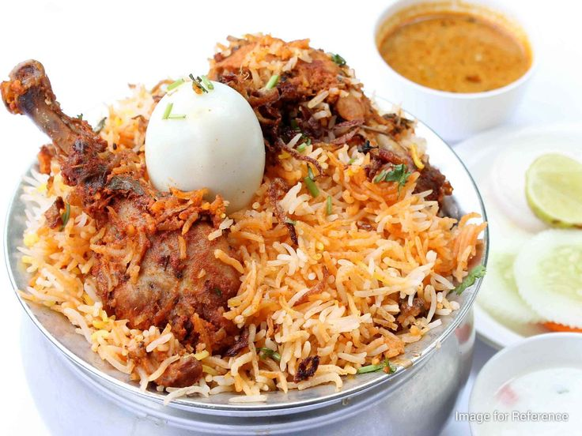

Chicken Biryani

Ingredients:
- 1 lb chicken, cut into pieces
- 2 cups basmati rice
- 2 onions, thinly sliced
- 2 tomatoes, chopped
- 1/2 cup plain yogurt or steamed milk
- 4 cups water
- 3-4 green chilies, slit
- 1 tablespoon ginger-garlic paste
- Whole spices (bay leaf, cardamom, cloves, cinnamon)
- 1 teaspoon turmeric powder
- 1 teaspoon garam masala
- Fresh cilantro and mint for garnish
- Lime
- Egg
- Salt
- Ghee
- 2 onion for beresta
- 1 and 1/2 tsp sugar for beresta
Instructions:
- Rinse the rice and soak it in water for 30 minutes.
- Heat ghee in a large pot. Add whole spices and sauté until fragrant.
- Add sliced onions and fry until golden brown.
- Add ginger-garlic paste and green chilies; sauté for a minute.
- Add chopped tomatoes, turmeric, and salt; cook until tomatoes soften.
- Add chicken pieces and cook until browned. Stir in yogurt o steamed milk and garam masala.
- Add soaked rice and water; bring to a boil.
- Reduce heat, cover, and simmer until rice is cooked (about 15-20 minutes).
- Garnish with cilantro,mint,boiled egg,lime and beresta before serving.